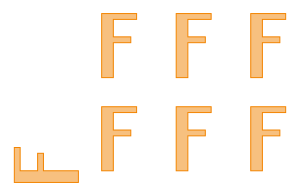
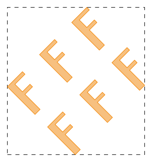
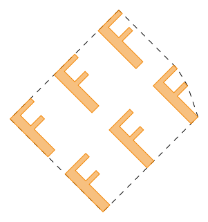

gdstk.Reference
- class gdstk.Reference(cell, origin=(0, 0), rotation=0, magnification=1, x_reflection=False, columns=1, rows=1, spacing=None)
Reference to another cell.
References are used to instance repetitive geometries across different cells, optionally applying a transformation.
- Parameters:
cell (gdstk.Cell, gdstk.RawCell, str) – referenced cell.
origin – Insertion position of the referenced cell.
rotation – Cell rotation angle (in radians).
magnification – Geometry scaling for this reference.
x_reflection – If
True, the geometry is reflected across the horizontal axis before rotation.columns – Number of repetitions along the first direction.
rows – Number of repetitions along the second direction.
spacing – Spacing between insertions points of repetitions.
Examples
>>> polygons = gdstk.text("F", 10, (0, 0)) >>> f_cell = gdstk.Cell("F_CELL") >>> f_cell.add(*polygons) >>> ref = gdstk.Reference(f_cell, rotation=numpy.pi / 2) >>> array_ref = gdstk.Reference(f_cell, columns=3, rows=2, ... spacing=(8, 10))
Notes
If
cellis a str (cell name), operations on the referenced cell are not performed, such as computing the bounding box.When
spacingis set, a repetition is defined according to therotationandx_reflectionarguments.Methods
Create new references based on this object's
repetitionattribute.Calculate the bounding box of this reference.
Calculate the convex hull of this reference.
copy()Create a copy this reference.
delete_gds_property(attr)Delete a GDSII property of this element.
delete_property(name)Delete the first property of this element matching a name.
get_gds_property(attr)Return a GDSII property of this element.
get_labels([apply_repetitions, depth, ...])Return a copy of all labels created by this reference.
get_paths([apply_repetitions, depth, layer, ...])Return a copy of all paths created by this reference.
get_polygons([apply_repetitions, ...])Return a copy of all polygons created by this reference.
get_property(name)Return the values of the first property of this element matching a name.
set_gds_property(attr, value)Set a GDSII property for this element.
set_property(name, value)Set a property for this element.
Attributes
Cell referenced by this object.
Name of the cell referenced by this object.
Reference magnification.
Reference origin.
Properties of this element.
Repetition associated with this element.
Reference rotation angle (in radians).
Reference reflection across the x axis.
- apply_repetition() list
Create new references based on this object’s
repetitionattribute.After the repetition is applied, the original attribute is set to
None.- Returns:
Newly created objects.
- bounding_box() tuple
Calculate the bounding box of this reference.
- Returns:
The lower-left and upper-right corners of the bounding box of the polygon:
((min_x, min_y), (max_x, max_y)).
Notes
This operation can be slow because the precise bounding box calculation requires recursively querying the polygonal representations of all shapes created by this reference.
Examples
>>> polygons = gdstk.text("F", 10, (0, 0)) >>> f_cell = gdstk.Cell("F_CELL") >>> f_cell.add(*polygons) >>> ang = numpy.pi / 4 >>> array_ref = gdstk.Reference(f_cell, rotation=ang) >>> array_ref.repetition = gdstk.Repetition(columns=3, rows=2, ... v1=8 * numpy.exp(1j * ang), v2=10j * numpy.exp(1j * ang)) >>> array_ref = gdstk.Reference(f_cell, rotation=numpy.pi / 4) >>> array_ref.repetition = gdstk.Repetition(columns=3, rows=2, ... spacing=(8, 10)) >>> bbox = array_ref.bounding_box() >>> print(bbox) ((-12.816310409006173, 1.7677669529663689), (11.313708498984761, 27.66555281392367)) >>> polygon_bb = gdstk.rectangle(*bbox, datatype=1)
- cell
Cell referenced by this object.
- cell_name
Name of the cell referenced by this object.
- convex_hull() ndarray
Calculate the convex hull of this reference.
The convex hull is the smallest convex polygon that contains all elements of this reference.
- Returns:
Vertices of the convex hull.
Examples
>>> polygons = gdstk.text("F", 10, (0, 0)) >>> f_cell = gdstk.Cell("F_CELL") >>> f_cell.add(*polygons) >>> ang = numpy.pi / 4 >>> array_ref = gdstk.Reference(f_cell, rotation=ang) >>> array_ref.repetition = gdstk.Repetition(columns=3, rows=2, ... v1=8 * numpy.exp(1j * ang), v2=10j * numpy.exp(1j * ang)) >>> path = gdstk.FlexPath([(-5, 0), (0, -5), (5, 0)], 1, ... simple_path=True) >>> main_cell = gdstk.Cell("MAIN") >>> main_cell.add(array_ref, path) >>> hull = main_cell.convex_hull() >>> polygon_hull = gdstk.Polygon(hull, datatype=1)
Notes
This operation can be slow because all paths and references are included in the computation.
- copy() gdstk.Reference
Create a copy this reference.
- Returns:
Copy of this reference.
- delete_gds_property(attr) self
Delete a GDSII property of this element.
- Parameters:
attr (number) – Property number.
- delete_property(name) self
Delete the first property of this element matching a name.
- Parameters:
name (str) – Property name.
- get_gds_property(attr) str
Return a GDSII property of this element.
- Parameters:
attr (number) – Property number.
- Returns:
Property value. If the property number does not exist,
Noneis returned.- Return type:
str or None
- get_labels(apply_repetitions=True, depth=None, layer=None, texttype=None) list
Return a copy of all labels created by this reference.
- Parameters:
apply_repetitions – Define whether repetitions should be applied in the created labels.
depth – If non negative, indicates the number of reference levels processed recursively. A value of 0 will result in no references being visited. A value of
None(the default) or a negative integer will include all reference levels below the cell.layer – If set, only labels in the defined layer and text type are returned.
texttype – If set, only labels in the defined layer and text type are returned.
Notes
Arguments
layerandtexttypemust both be set to integers for the filtering to be executed. If either one isNonethey are both ignored.
- get_paths(apply_repetitions=True, depth=None, layer=None, datatype=None) list
Return a copy of all paths created by this reference.
- Parameters:
apply_repetitions – Define whether repetitions should be applied in the created paths.
depth – If non negative, indicates the number of reference levels processed recursively. A value of 0 will result in no references being visited. A value of
None(the default) or a negative integer will include all reference levels below the cell.layer – If set, only paths in the defined layer and data type are returned.
datatype – If set, only paths in the defined layer and data type are returned.
Notes
Arguments
layeranddatatypemust both be set to integers for the filtering to be executed. If either one isNonethey are both ignored.
- get_polygons(apply_repetitions=True, include_paths=True, depth=None, layer=None, datatype=None) list
Return a copy of all polygons created by this reference.
- Parameters:
apply_repetitions – Define whether repetitions should be applied in the created polygons.
include_paths – If
True, polygonal representation of paths are also included in the result.depth – If non negative, indicates the number of reference levels processed recursively. A value of 0 will result in no references being visited. A value of
None(the default) or a negative integer will include all reference levels below the cell.layer – If set, only polygons in the defined layer and data type are returned.
datatype – If set, only polygons in the defined layer and data type are returned.
Notes
Arguments
layeranddatatypemust both be set to integers for the filtering to be executed. If either one isNonethey are both ignored.
- get_property(name) list
Return the values of the first property of this element matching a name.
- Parameters:
name (str) – Property name.
- Returns:
List of property values. If no property is found,
Noneis returned.- Return type:
list or None
- magnification
Reference magnification.
- origin
Reference origin.
- properties
Properties of this element.
Properties are represented as a list of lists, each containing the property name followed by its values.
- repetition
Repetition associated with this element.
- rotation
Reference rotation angle (in radians).
- set_gds_property(attr, value) self
Set a GDSII property for this element.
GDSII properties are stored under the special name “S_GDS_PROPERTY”, as defined by the OASIS specification.
- Parameters:
attr (number) – Property number.
value (str) – Property value.
- set_property(name, value) self
Set a property for this element.
The property name does not have to be unique. Multiple properties can have the same name.
- Parameters:
name (str) – Property name.
value (str, bytes, number, or sequence of those) – Values associated with the property.
Notes
These properties can be used to associate custom metadata with an element, but general properties are not supported by GDSII files, only OASIS. Use the specific methods to access GDSII properties.
- x_reflection
Reference reflection across the x axis.